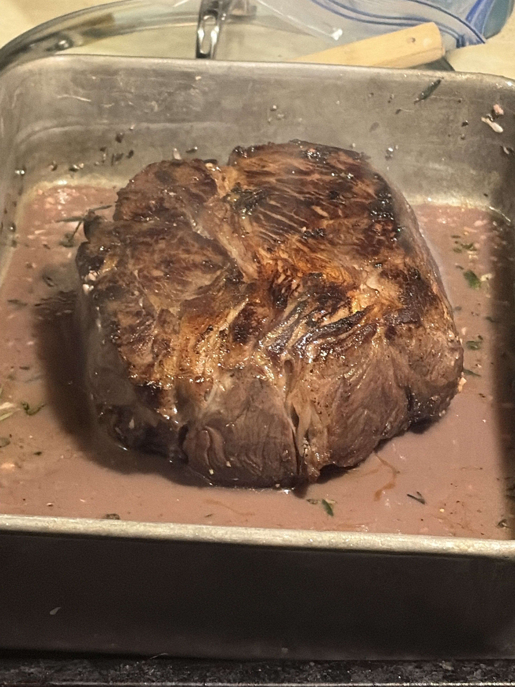
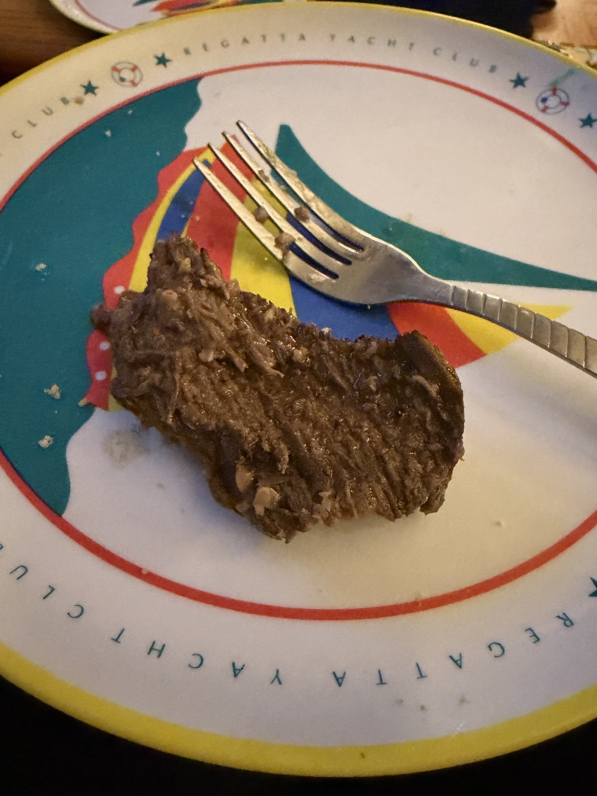
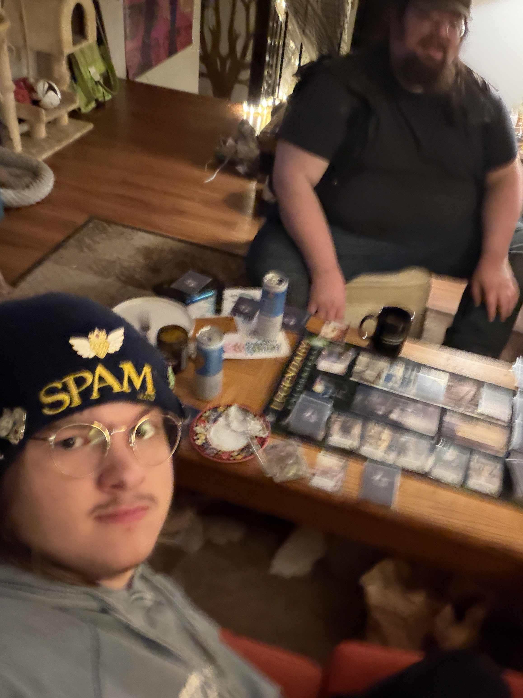
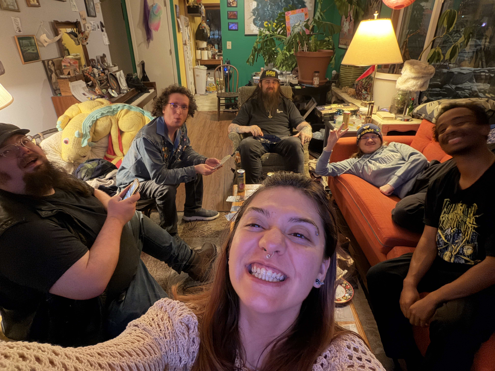
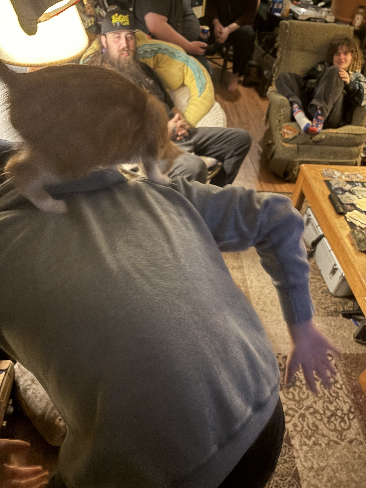
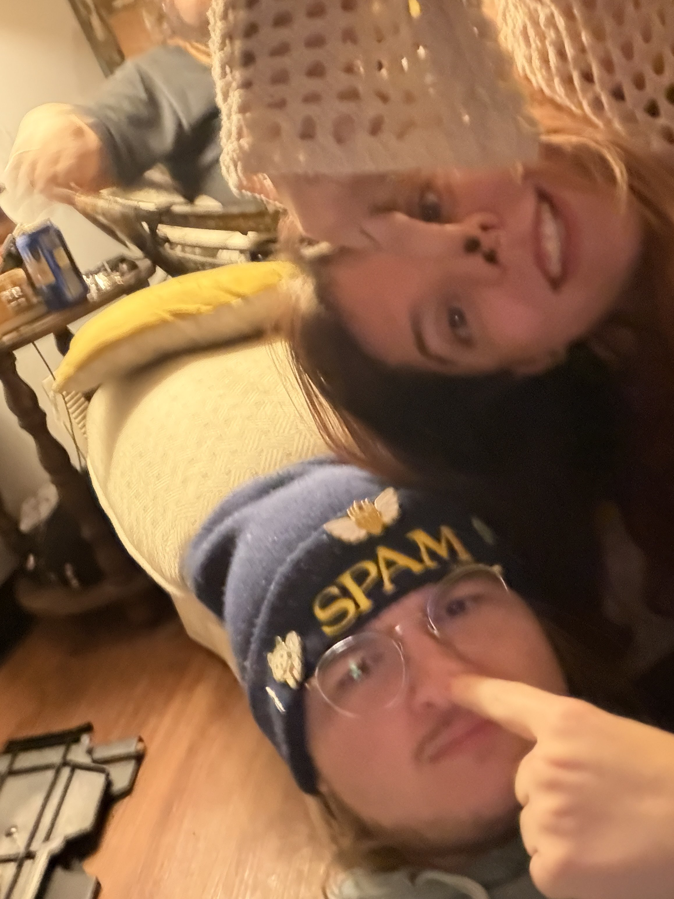
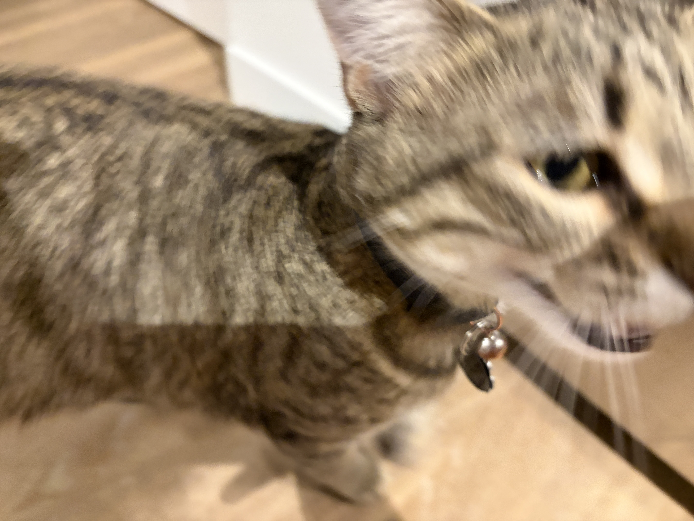

I had Friendsgiving last night. Pigeon invited me over. I brought my aunt Laura's stuffing from her Thanksgiving on thursday (with her permission) and it was a huge hit. But that's getting ahead of things.
I showed up around 6:30pm and Pigeon and Morgan were watching Love Island Australia season 7, and I sat next to Pigeon, and then we were all watching Love Island Australia season 7. Jotham was fucking insanely attractive and by far my fave. Anyways, we kinda just did that for a while, until Aiden (from GDQ, Bonnie Dimples) showed up, and then him and Pigeon got to cooking. Aiden brought a shitton of foodstuff, like two full giant insulated shopping bags full. And, importantly, a cut of bison which had been marinating for two days in wine, worcestershire sauce, and some other things.

The full bison 🦬
I've been a vegetarian for like 5 years at this point. Don't really know why I started, but I did, mid-September 2020. And I've not had a cut of meat since then, at least as far as I know. But I've

The partial bison 🦬
It was good! It was really good. And chewy, I forgot how chewy meat is. And it got stuck in my teeth. There was like a sour tang to it from all the marinade, it was really really something. I'm really glad I had it. And I mean I also had some Baja Blast Pie (from last month, still in the freeze 🥶💚), and some stuffing, and a salad with ranch, and some vegetable stew Pigeon made, and some potatoes, and some mashed potatoes, and a whole shitton of pumpkin pie. AND a Mountain Dew Dragonfruit. AND a 1919 Root Beer. I was fuckin stuffffeedddddd bro.
During all this we also watched some Flavor of Love season 2, and some kitten cocktail party thing on Hulu, and some Longmont Potion Castle. And while Pigeon was scrolling Hulu she had Pretty Little Liars in her recently watched and she was on season 6 episode 1 so I was like "the bunker?" and she was like "the bunker!" and then we actually just screamed and queened out for like five seconds straight about the dollhouse because we SAW EACH OTHER.
Anyways then we played an Alien Board Game and played with their cat, Hamms, and we all died during the Alien board game pretty bad.


Da game and da group.

Hamms on me 🐈 it was actually a whole ordeal to get this photo, me and Pigeon were screaming while Morgan tried to get it.

Me and Pigeon 😌
Anyways then I left at like 3am. It was amazing. It was a #healing. I feel so renewed, I feel. Idk. I feel so good. It was really what I needed. I love these people so much.

And this is who was waiting for me when I got home 🥺